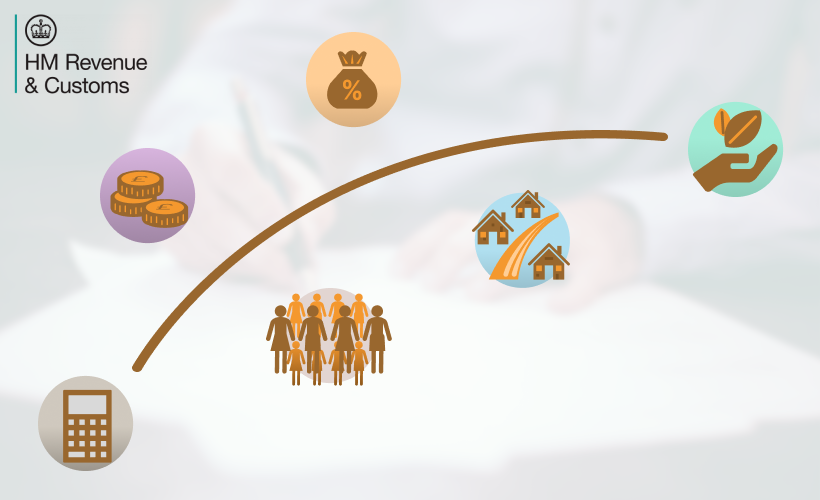
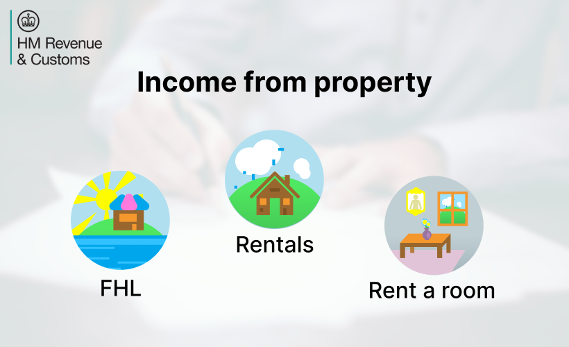
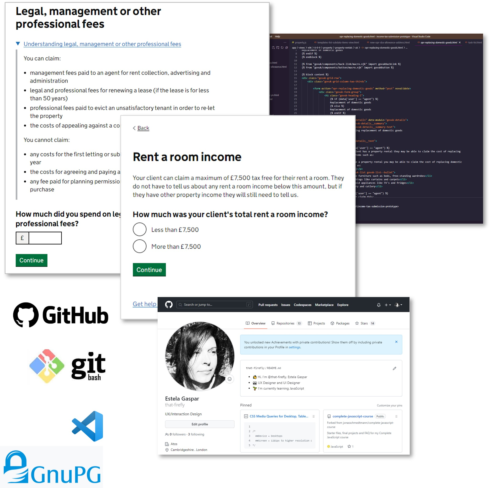
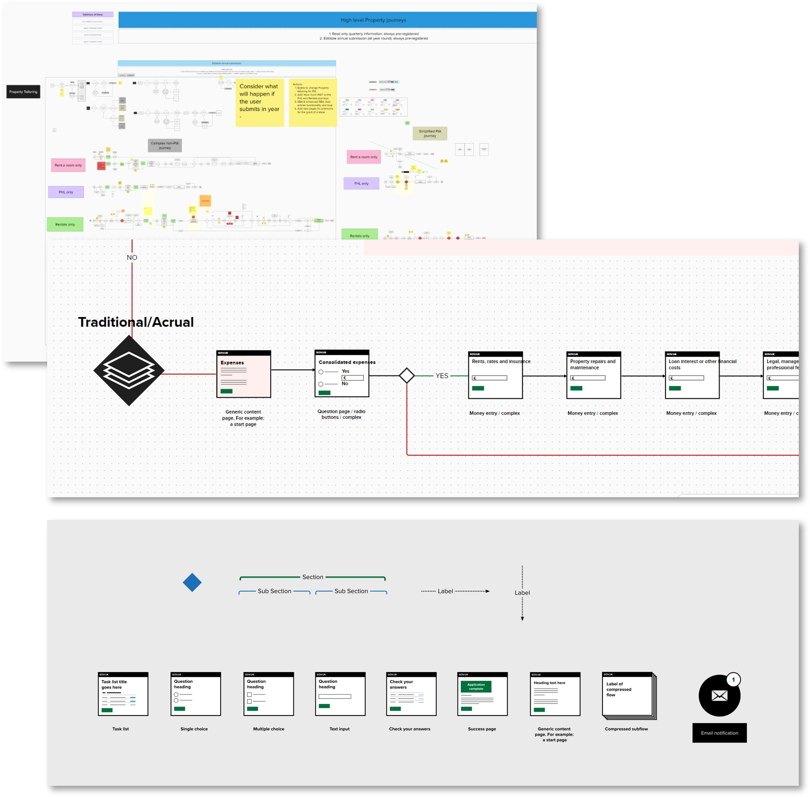
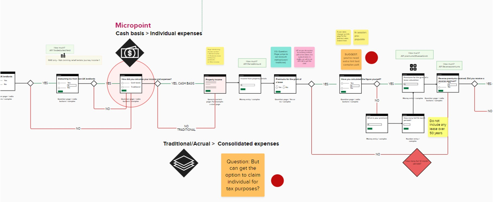
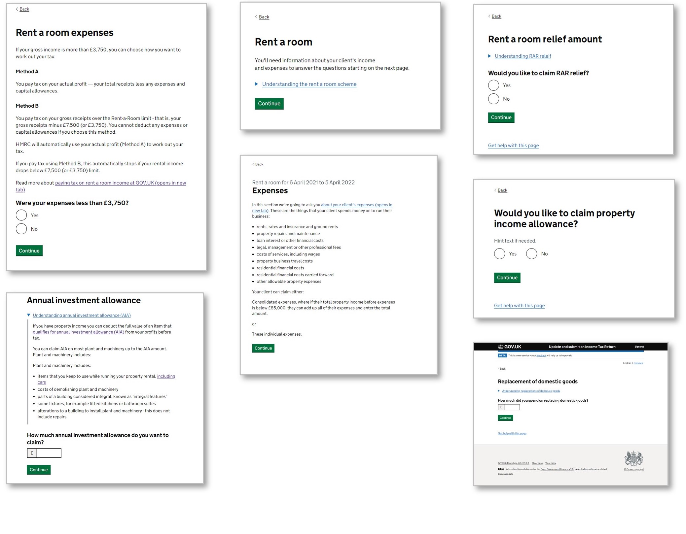

This is a ready-to-print page
HMRC (Government)
Make Tax Digital (MTD) and Advanced Ruling Service (ARS)
His Majesty’s Revenue and Customs (HMRC) is the UK’s tax authority, established in 2005 to collect revenue for public services and provide financial support. Within this context, services such as Making Tax Digital (MTD) for Property Income Tax Submission and the Advanced Ruling Service (ARS) support the government’s move towards clearer, more efficient tax processes.
The challenge
User journeys were long and complex, shaped by the realities of tax law, accounting rules, and compliance requirements. The challenge was not just technical, but about making complex, often overwhelming information feel clear and manageable for users. With Make Tax Digital (MTD), this meant supporting people through structured digital record-keeping and regular submissions, while the Advanced Ruling Service (ARS) required presenting clear, binding decisions in a way users could understand and trust before taking action.

My role
Digital income tax submission covers a range of complex scenarios, from UK to international property income, including Furnished Holiday Lettings, rentals, and Rent a Room. The work focused on shaping the income property journey by creating and refining pages, connecting journeys, and using research to guide decisions. It went beyond interface design, bringing in UX thinking to choose the right GDS components and patterns, making the experience clearer, more consistent, and easier for users to navigate.

Process and approach
The work involved setting up and working within a technical prototyping environment, enabling local development and seamless integration with the GOV.UK MTD Income Tax repository. This included creating and iterating on over 25 pages using HTML and Nunjucks, structuring and linking end-to-end journeys, and ensuring consistency across the experience. Content and error messaging were maintained and updated in alignment with documentation in Confluence, while business analyst user flow maps from Mural were translated into functional prototype journeys. User flows were also refined and redesigned using team standards to improve clarity, alignment, and cross-disciplinary understanding.

Collaboration played a key role throughout the process, with regular engagement across multidisciplinary teams including user research, business analysis, and interaction design. Participation in meetings such as UR Community, BA meetings, Show and Tell, and weekly check-ins supported continuous alignment and iteration. Beyond delivery, the role contributed to the strategic shaping of the user experience, applying UX expertise to inform design decisions, improve journey coherence, and ensure solutions were both user-centred and aligned with GDS standards.



Examples of deliverables from the HMRC project
My contribution
My contribution focused on shaping user-centred digital solutions that balanced HMRC’s regulatory requirements with usability and accessibility. I brought a strong UX perspective to complex tax journeys, analysing user needs, pain points, and legal constraints to translate them into clear, intuitive experiences. By mapping end-to-end journeys and identifying key decision points, I helped simplify complex processes and improve the overall flow, supporting users in completing their tax submissions with greater confidence.
I worked closely with multidisciplinary stakeholders to ensure the service remained transparent, responsive, and accessible to a wide range of users, from individual taxpayers to larger organisations. My contribution included conducting user research to uncover friction points, developing user flows, empathy maps, and page patterns aligned with GDS standards, and iterating on prototypes using the GOV.UK Prototype Kit, GitHub, and Nunjucks. Through continuous testing and collaboration, I supported the delivery of improvements that made the experience more coherent, efficient, and user-focused.